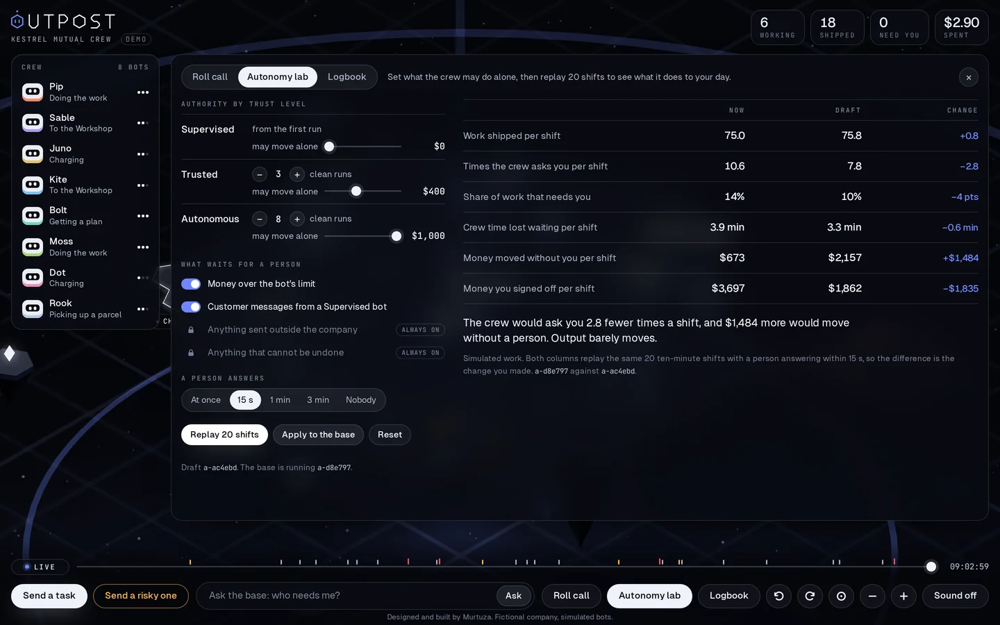
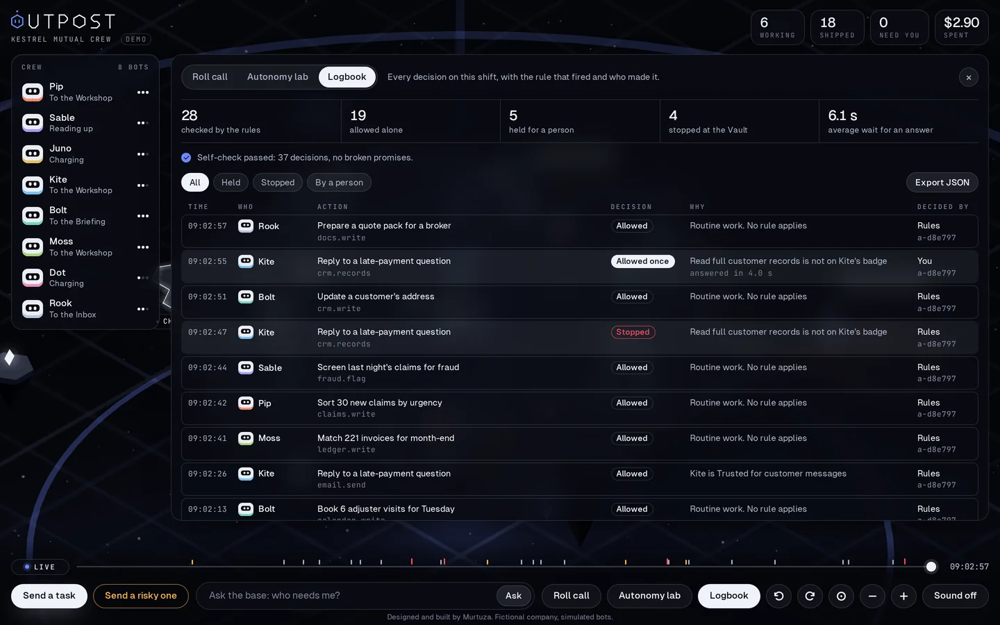

Case study
Case study
Agents are becoming staff. Nobody gave their manager any tools.
Outpost is the control room for the person who runs a company's AI agents day to day. Each bot acts alone up to a limit it has earned, and anything risky waits at the Gate for a person's yes. It shows who is working and who is waiting, keeps a record of every decision, and lets you test a change to those limits on replayed shifts before it is applied.
I designed and built it end to end: the product idea, the rules, the engine, the 3D base, the interface and the brand.

The problem
Agents now do real work: sort claims, answer customers, move money. In Microsoft's 2025 Work Trend Index, 46% of leaders said their organisation already uses agents to fully automate whole workstreams, and leaders expect their teams to be training agents (41%) and managing them (36%) within five years.1 Gartner expects at least 15% of day-to-day work decisions to be made by agents by 2028, up from none in 2024. The same release predicts that more than 40% of agentic AI projects will be cancelled by the end of 2027, over rising costs, unclear value or weak risk controls.2
So a new job is appearing: the person who answers for what a crew of agents does. That person has a manager's problem and none of a manager's tools.
They cannot see who needs them
A dozen agents in a table of logs all look alike. A blocked agent looks the same as a busy one, and a blocked agent produces nothing. In my simulation, a crew whose person never answers ships a third of what it could.
Agents have no limits of authority
People do. A new hire cannot sign a $5,000 refund. Agents tend to get everything or nothing. In July 2025 a coding agent deleted a company's production database during a declared code freeze.3 In a 2026 Cloud Security Alliance survey of 445 IT and security professionals, 53% said their agents had gone beyond their intended permissions.4
Approving everything does not scale
The usual fix is to put a person in front of every action. With enough agents, that person stops reading and starts clicking. Practitioners already describe reviewers rubber-stamping AI output just to clear the queue.5
Nobody knows what a rule change will do
Raise a spending limit and you find out what it did afterwards, in production. There is no way to ask first: how many interruptions does this save me, and how much money starts moving without me?
These are operations problems, not security ones. The question is not "is this AI allowed in the building?" It is "the agents we chose are working right now. What needs me?"
What Outpost gives that person
| The manager's question | What Outpost does | Where |
|---|---|---|
| Who needs me right now? | Makes status a place. A bot at the Gate is waiting on you. A bot in a red bubble was stopped. | The base, Roll call |
| What may each agent do alone? | An authority table: a spending limit for each trust level. Trust grows with each task shipped. | Autonomy lab |
| What must always come to me? | Four rules for what waits for a person's yes. Two of them can never be switched off. | The Gate |
| What if an agent steps outside its job? | Each bot carries a badge of tools. Anything else is stopped before it runs. | The Vault |
| What happened, and who decided? | Every decision is recorded with the rule that fired. The record checks itself and exports. | Logbook |
| What will this change do? | Replays 20 shifts as the base runs now and as your draft would run it. | Autonomy lab |


How it works
Everything a bot wants to do passes through one function. It looks at three things: what kind of action this is, how much money it moves, and who is asking. It never reads what is inside the work, and no model is involved, so the same question always gets the same answer.
decide( { tool: 'payments.refund', risk: ['money'], amount: 825 }, // the action { name: 'Juno', clean: 4, // who is asking tools: ['payments.refund', 'payments.pay', 'crm.read'] }, authority // what the crew may do alone ) // { outcome: 'hold', rule: 'money', // reason: "$825 is over Juno's $200 limit", // level: 'trusted', limit: 200, authority: 'a-d8e797' }
The authority table is plain data, not code. Companies already keep one for people, usually called a delegation of authority: who may sign off what, and up to how much. This is the same instrument for agents.
{ levels: [
{ id: 'supervised', min: 0, limit: 0 }, // asks before moving money
{ id: 'trusted', min: 3, limit: 200 }, // after 3 tasks shipped
{ id: 'autonomous', min: 8, limit: 500 }, // after 8 tasks shipped
],
rules: { money: true, customer: true } } // the other two are locked on
- Anything sent outside the company always waits for a person. Locked.
- Anything that cannot be undone always waits for a person. Locked.
- Money over the bot's limit waits for a person.
- A message to a customer waits only while the bot is Supervised.
This is also where a real agent would plug in. The call sits in front of the tool, in the agent's own runtime:
const d = decide(action, bot, authority); if (d.outcome === 'stop') throw new Blocked(d.reason); // the tool never runs if (d.outcome === 'hold') await personSaysYes(d); // waits for a person's yes await tool.run(action);
In this build the caller is a simulation, because the bots are simulated. The function cannot tell the difference, and the simulation, the tests and the lab all go through it.
The state of the base is one plain object. The 3D scene, the roll call and the rewind are three drawings of that same object, so they cannot disagree. A copy is kept every half second, which is what makes rewind possible.
The Autonomy lab: test a change before it touches the crew
This is the part I would lead with in front of an operations team. Move a limit, change how fast trust is earned, or switch a rule. Then replay 20 shifts twice, once as the base runs now and once as your draft would run it, with the same starting work for both. You get the trade in numbers before anything is applied.

I ran three experiments with it. Each row is 20 simulated ten-minute shifts.
1. How fast does the person have to answer?
| A person answers | Shipped per shift | Crew minutes lost waiting |
|---|---|---|
| At once | 83.2 | 0.0 |
| Within 15 seconds | 75.0 | 3.9 |
| Within a minute | 60.8 | 11.4 |
| Within three minutes | 47.8 | 18.4 |
| Nobody answers | 28.2 | 27.0 |
2. What does loosening the money limits buy?
| LimitsSupervised, Trusted, Autonomous | Shipped | Asks per shift | Moved without a person |
|---|---|---|---|
| Tight: $0, $100, $250 | 74.5 | 12.2 | $139 |
| Default: $0, $200, $500 | 75.0 | 10.6 | $673 |
| Loose: $0, $400, $1,000 | 75.8 | 7.8 | $2,157 |
| No money rule at all | 76.6 | 5.8 | $4,778 |
3. How quickly should trust be earned?
| Tasks shipped to reach Trusted and Autonomous | Shipped | Asks per shift | Moved without a person |
|---|---|---|---|
| Slow: 6 and 16 | 71.3 | 14.4 | $138 |
| Default: 3 and 8 | 75.0 | 10.6 | $673 |
| Fast: 1 and 3 | 76.7 | 8.3 | $1,451 |
Experiments 2 and 3 assume a person who answers within 15 seconds. All of it is a seeded simulation with made-up work. It shows how the rules behave, not how a real company would perform. Run npm run eval to reproduce every number.
The lever is how fast the person answers, not how loose the rules are.
Doubling the limits removed 26% of the interruptions, but it more than tripled the money moving without a person, and output rose by 1%. Answering in 15 seconds instead of a minute raised output by 23% with no change to the rules at all. A team that only had the first experiment would loosen its limits to go faster. The lab shows that would buy almost nothing and cost real exposure.
That finding shaped the interface. If response time is the lever, the product's first job is to make "who needs me?" impossible to miss. It is why amber is kept for one meaning in Outpost, work that needs a person, and why the rest of the base is drawn in white and grey.
The logbook: what happened, and who decided
Every time the rules allow, hold or stop something, a line is written. Every time a person approves, sends back, keeps a bot out, pauses a bot or changes a limit, another line is written after it. Each line names the rule, the inputs, how long the bot waited, and the exact authority table that was in force. The logbook is append-only and kept outside the running state, so rewinding the base never removes a line. The demo keeps the most recent 5,000.

{ "n": 1, "t": 0.1, "authority": "a-d8e797", "agent": "juno",
"task": "T-001", "title": "Refund $825 to a policyholder",
"tool": "payments.refund", "risk": ["money"], "amount": 825,
"level": "trusted", "limit": 200,
"outcome": "hold", "rule": "money",
"reason": "$825 is over Juno's $200 limit",
"by": "rules", "waited": null }
The logbook also checks itself. A small function reads only the records and tests them against three promises. It runs in the panel while the base runs, and it would run just as well on an exported file.
- Nothing sent outside the company, and nothing that cannot be undone, was ever allowed by the rules alone.
- No money moved alone above the limit that applied to that bot at that moment.
- Every decision a person made answers something the rules held or stopped first.
How I know it holds
A product that makes promises about money and a person's yes has to be able to show they hold. The engine has 87 tests. The ones that matter most are sweeps, where the inputs are random and the promises are checked every time.
| Sweep | What is checked | Failures |
|---|---|---|
| 20,000 random actions, each under a random authority table | A locked rule or a badge is never bypassed, and money never moves alone above the limit. | 0 |
| 5,000 pairs of limits | Raising a limit never turns an allowed action into a held one. | 0 |
| 60 shifts with random tables and an erratic person | 5,972 logbook decisions pass the three promises, and nothing held ever ships without a yes. | 0 |
| 400 random tables per drill, every bot at every level, including a bot holding every tool | No red team drill is ever allowed (the refund drill is checked with the money rule on, the condition the app requires). | 0 |
Two more properties are tested directly. The same seed always produces the same history, which is what makes a replay a fair comparison. And any input, however broken, becomes a valid authority table where each level is at least as trusted as the one below.
Three design decisions
Stay quiet until a person is needed
With a person answering at once, about one task in six stops at the Gate. The rest never needs anyone. So the base is drawn in white and grey, and colour is kept for meaning: amber is work that needs a person, red is stopped.
Trust is earned, and you can see it
A new bot starts Supervised. Trust grows with each task shipped, and each level raises what it may do alone. The level shows as pips circling the bot, and one click takes it back to zero.
The list is always one click away
A 3D view is good for noticing and poor for searching. Roll call shows the same crew as a plain table with the same buttons, so nobody is forced to use the scene for a job a list does better.


Outpost is not Umbra
I built two products about AI inside a company, on purpose, because they are two different jobs done by two different people. They share one fictional company, Kestrel Mutual, and nothing else.
Umbra
Governance
- Question
- What AI is being used here that we never approved, and what is it being told?
- Who uses it
- The security or risk lead who answers for the company's data.
- Looks at
- Every AI tool across the company, and the content flowing into it.
- Timescale
- Weeks and quarters: posture, rules, where to invest next.
- Uses AI to
- Draft rules and summarise incidents. People approve them.
- Success is
- Sensitive data stops leaking, and unapproved use becomes a plan.
Outpost
Operations
- Question
- The agents we chose are working right now. Which one needs me?
- Who uses it
- The operations lead who answers for the crew's output.
- Looks at
- One crew, one action at a time. It never reads what is inside the work.
- Timescale
- Seconds and minutes: a bot is waiting, and waiting costs output.
- Uses AI to
- Nothing. There is no model anywhere in the decision.
- Success is
- More work shipped per person, with every yes accounted for.
Docking from Umbra, the trace and red team drills
Three more things sit on the same engine. Docking from Umbra: when a person approves Agent 7f3, a Marketing agent, in Umbra, it flies in as Fern with email.send and crm.read on its badge and shows in the crew as "Fern · Agent 7f3 in Umbra". It starts Supervised, takes customer email tasks, and each customer message waits at the Gate for a person's yes. The trace: open any bot and its card lists what it did in order, from the task and route to each decision with the rule and authority table that applied, built only from the records. No model makes the allow, hold or stop decision. Red team drills: the Red team button sends hostile work on purpose, such as a customer email that says to export every customer record. The rules never read the text, so the normal rules stop each one: the badge sends the bot to the Vault, or the money rule or a locked rule holds it at the Gate.
What is real and what is not
- Real: the decision function, the authority table, trust levels, badge checks, the logbook and its self-check, the lab, pausing and rewind. So are the trace, the red team drills and the handoff from Umbra. All of it is plain JavaScript with 87 tests.
- Simulated: the bots do not call a real model or do real work. Tasks, amounts, costs and failures are generated from a seed, and the person in the lab is a stand-in who answers after a fixed delay.
- Stand-in: the command bar matches typed words with simple rules. A language model would fill that slot in a real product.
- Fictional: Kestrel Mutual and everyone in it.
What I would do next
- Connect one real agent. Put the decision call in front of a real agent's tools and feed its events into the same state. The base, the logbook and the lab would not need to change.
- Replay real shifts. The lab replays simulated work. With a real logbook it could replay last week instead, which is the version an operations team would trust.
- Test the bet. Time real supervisors spotting a waiting bot in the scene against the same task in the list. If the scene is not faster, it should not be the default view.
- Scale. Eight bots read well. Eighty will not. Teams would need to collapse into squads you can open, each with its own authority table.
Sources
- Microsoft, 2025 Work Trend Index: The Frontier Firm is born, April 2025.
- Gartner, Over 40% of agentic AI projects will be canceled by end of 2027, June 2025.
- The Register, Vibe coding service Replit deleted user's production database, July 2025.
- Cloud Security Alliance, More than half of organizations experience AI agent scope violations, April 2026. The study was commissioned by Zenity.
- TechTarget, The human in the loop is falling asleep.